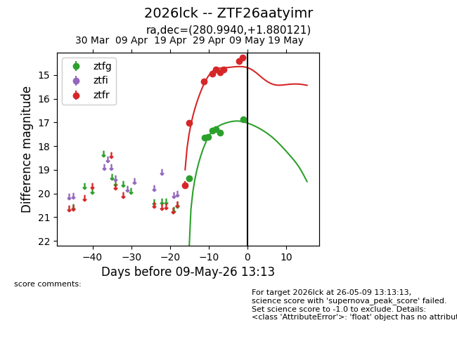
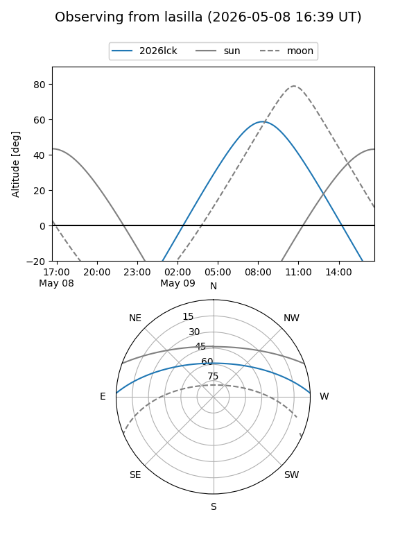
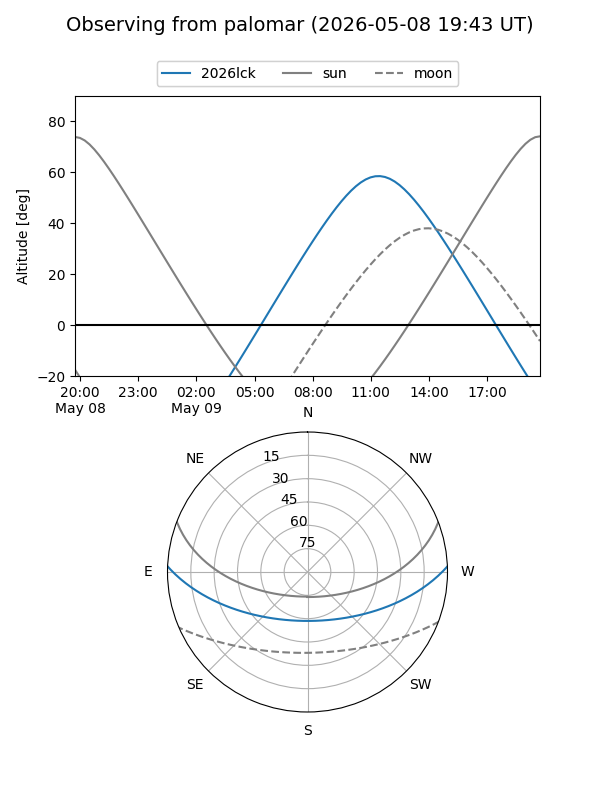
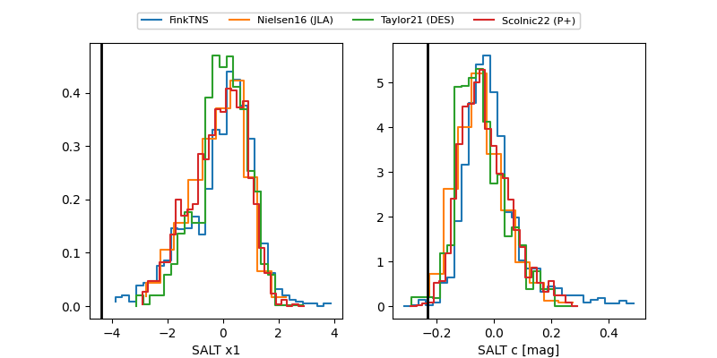

2026lck
Target 2026lck at 2026-05-09 13:16
Aliases and brokers:
FINK: link
Lasair: link
ALeRCE: link
TNS: link
YSE: link
alt names
ZTF26aatyimr (ztf,fink_ztf)
2026lck (tns,yse)
Coordinates:
equatorial (ra, dec) = 280.9940,+1.88012
equatorial (HMS+DMS) = 18:43:58.56,+01:52:48.44
galactic (l, b) = (33.7557,+2.51703)
Flags:
Photometry:
last ztfg=16.86, ztfr=14.26
7 ztfg, 9 ztfr detections
Lightcurve

Visibility


Additional plots
